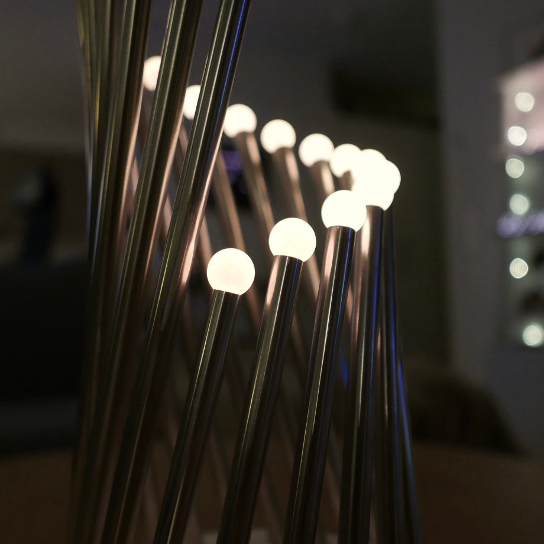
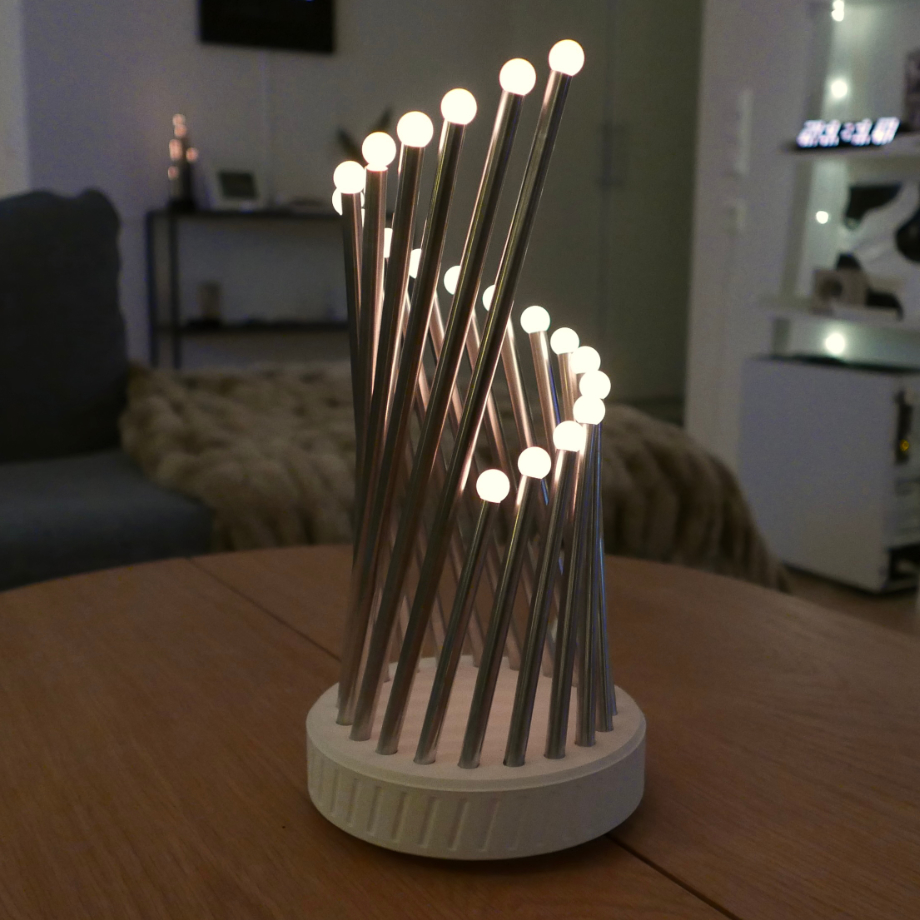
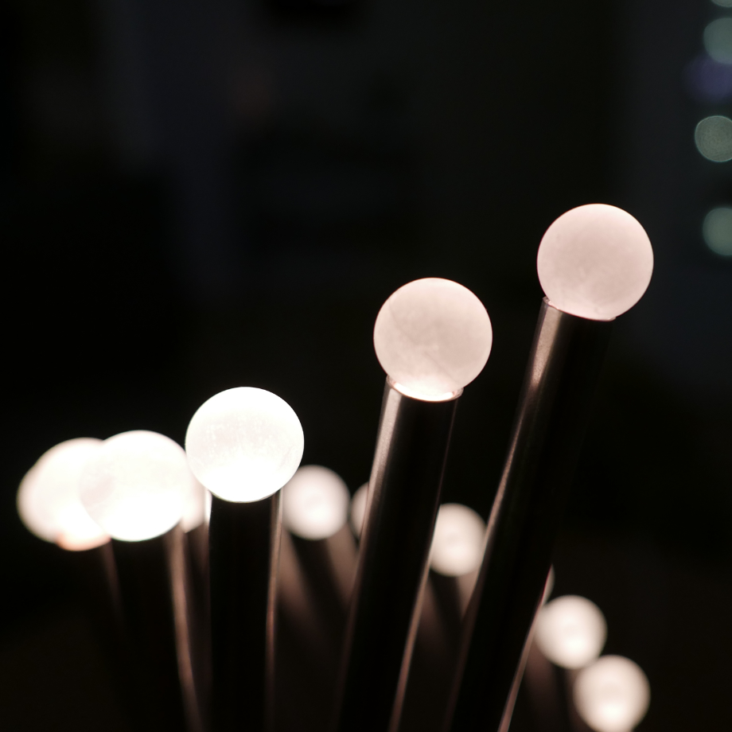
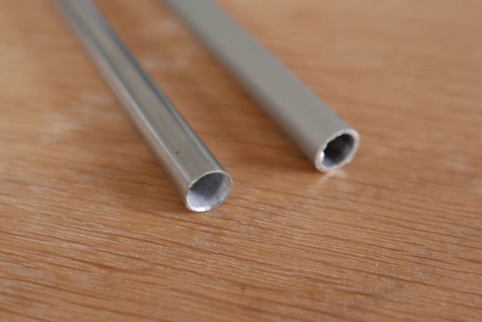
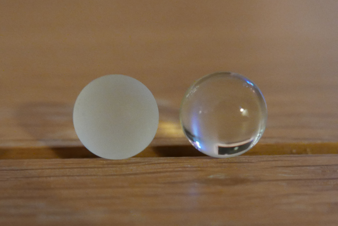
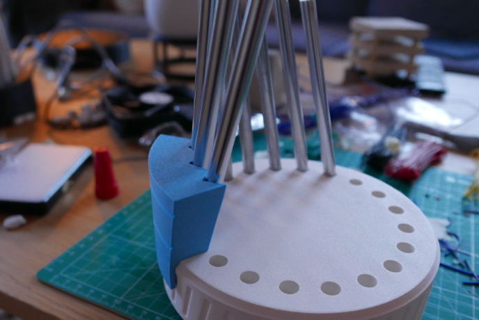
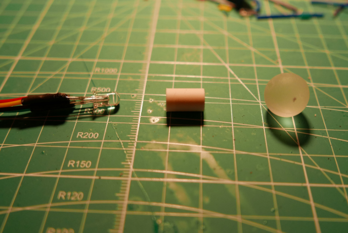
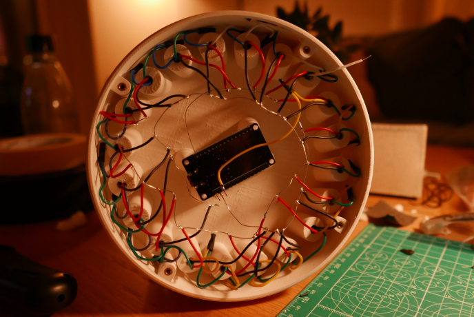

Jag fick äntligen tag i glaskulor som jag egentligen ville haft till Rörskog
Kunde inte köra på exakt samma design så gjorde någon spiral istället




Jag började med att såga till alla 20 rören med aluminium
Lärde mig att det ligger någon ytbehandling på aluminiumrör så fick bada alla rören i mr muscle propplösare för att få bort den skiten
Efter de slipade jag rören med 400 upp till 1200 grit och polerade sedan dom

Kunde inte hitta några frostade glaskulor så fick köpa hem vanliga glaskulor och frosta dom själv med lite etspasta
Testade först att pensla på de på några stycken men de blev inte så bra så jag bara körde ner 5 i taget i burken och lät de va i 30 minuter sen spolade av dom
Blev väl kanske inte perfekt men helt klart good enough

Jag gjorde en jigg för att sätta dit rören rätt i basen
Ganska viktigt att de blev helt rätt för de är inte mycket marginal mellan kulorna och rören

Lampdelen är ganska lik Rörskog
Varje lampa består av själva LEDn, en liten 3d printad adapter och sen kulan
Jag gjorde det så för att det va lite lättare att limma ihop dessa delarna och sen använda adaptern för att limma fast allt i rören

Hade lite mer utrymme att dra sladdar på denna jämfört med Rörskog så det var inte lika pilligt
Gick dock åt väldigt mycket mer kabel än jag förväntat mig i och med att alla lampor har 4 sladdar och det är typ 5 meter av varje
Som vanligt är de ws2812 dioder och en esp32 med wled för att driva kalaset och göra lite roliga ljuseffekter